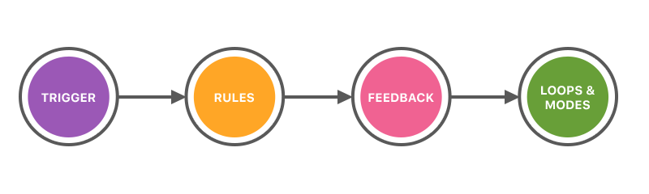

Der Anspruch an Multiscreen-Interaktionen ist es, intuitive Interaktionen zwischen zwei Geräten zu ermöglichen. Feedback ist dabei ein wichtiger Teil und trägt zu der Gestaltung einer guten User Experience bei. Der Nutzer sollte sich zu keiner Zeit unsicher sein, ob seine Eingabe registriert und eine Aktion ausgelöst wurde. Gerade im Umgang mit neuen Technologien und Interaktionsmethoden wie den hier beschriebenen ist es besonders wichtig, zu jedem Zeitpunkt sinnvolles Feedback zu geben. Die Aufteilung einer solchen Interaktion in ihre einzelnen Bestandteile kann hilfreich dabei sein, Situationen zu erkennen, an denen Feedback einen positiven Effekt haben könnte.
Das Kapitel "Wie" in den Pattern-Beschreibungen enthält eine Pattern-spezifische Aufzählung solcher "atomarer Interaktionen". Zusätzlich wird zu jeder dieser atomaren Interaktionen die gewünschte Aussage des Feedbacks gezeigt und ein Beispiel gegeben.
Im Folgenden wird zunächst der von Dan Saffer geprägte Begriff "Microinteraction" erklärt und daraufhin die in [Madden 2016] davon abgeleiteten, feingranulareren atomaren Interaktionen beschrieben.
Microinteractions sind die funktionalen, interaktiven Details eines jeden Produkts. Jedes mal wenn man eine Einstellung ändert, sich einen Wecker stellt oder sich auf einer Webseite einloggt, trifft man auf Microinteractions. Diese Details können entweder nur einen kleinen Teil eines Produkts darstellen oder aber die gesamte Funktionalität. So könnte eine simple Weckerapplikation nur aus einer Microinteraction bestehen: Dem Stellen des Weckers. Viele solche Apps werden jedoch um weitere Microinteractions erweitert. Ein Beispiel dafür wäre, dass der Nutzer erst eine Mathematikaufgabe lösen muss, bevor der Wecker ausgeschaltet werden kann.
Eine Microinteraction besteht aus vier Elementen:
Der Trigger ist der Auslöser für eine Microinteraction. Sobald die Konditionen des Triggers erfüllt wurden, spielt sich der Rest der Interaktion ab. Man unterscheidet zwischen zwei Arten von Triggern:
Ein manueller Trigger wird benötigt, wenn der Nutzer aktiv etwas tun möchte. Will er zum Beispiel die Tastensperre seines Handys lösen, wird er einen manuellen Trigger aktivieren müssen („Swipe to Unlock“). Systemtrigger hingegen kommen zum Einsatz, wenn eine Microinteraction ohne Nutzerinteraktion gestartet werden muss. Eine Weckerapplikation könnte zum Beispiel Systemtrigger benutzen um zur richtigen Zeit die Microinteraction des Weckens zu starten. Rules sind die Regeln einer Microinteraction. Sie bestimmen was geschehen soll, sobald die Microinteraction durch den Trigger ausgelöst wurde, wie lange sie dauert und was der Nutzer während des Ablaufs tun muss.
Microinteractions are the "feel" in "look and feel"
-Dan Saffer
Feedback in Microinteractions hat in erster Linie die Aufgabe, die Regeln der Microinteraction zu vermitteln. Wenn ein Nutzer zum Beispiel einen Knopf drückt, sollte ihm Feedback gegeben werden, das zwei Aufgaben erfüllt. Erstens sollte der Nutzer wissen, dass dieser Button gedrückt wurde. Zweitens muss der Nutzer erfahren, was das Drücken dieses Knopfes bewirkt hat. Loops („Schleifen“) in Microinteractions kommen immer zum Einsatz, wenn eine Microinteraction oder ein Teil davon mehrfach wiederholt werden oder zu einem späteren Zeitpunkt etwas aktivieren muss. Hat man zum Beispiel mehrmals sein Passwort falsch eingegeben, könnte ein Loop sein, für eine Minute Einlogversuche zu unterbinden. Modes („Modi“) sind im Zusammenhang mit Microinteractions eine „Gabelung in den Regeln“. Damit ist gemeint, dass die normalen Regeln einer Microinteraction nicht mehr so gelten, wie ohne den Mode. Ein Beispiel dafür ist die Capslock-Taste. Wenn sie einmal betätigt wurde, verhält sich die Eingabe von Text anders, als es normalerweise der Fall ist: alle Kleinbuchstaben werden zu Großbuchstaben und umgekehrt.
Atomare Interaktionen wurden von Dan Saffers Konzept der Microinteractions abgeleitet und beschreiben eine noch feinere Betrachtung einer Nutzerinteraktion. Bei Microinteractions betrachtet man die funktionalen Details eines Produkts und teilt sie in vier Teile auf: Trigger, Rules, Feedback und Loops & Modes (Siehe Microinteractions).
Diese differenzierte Betrachtung eines scheinbar kleinen Details ist hilfreich, da eine systematische Herangehensweise an das Design von Interaktionen es ermöglicht ein besseres Nutzererleben zu schaffen. In manchen Fällen reicht die Detailtiefe von Microinteractions jedoch nicht aus, um die Feinheiten einer Interaktion zu beschreiben. Will ein Nutzer beispielsweise die Tastensperre seines Smartphones lösen, so muss er die Microinteraction „Swipe to Unlock“ ausführen, wobei er seinen Finger entlang einer auf dem Bildschirm angezeigten Linie führt. Dieser Swipe kann nun weiter in drei atomare Interaktionen unterteilt werden.
Jede dieser atomaren Interaktionen hat wieder jeweils einen Trigger, Regeln und Feedback. Diese genaue Betrachtung einer Nutzerinteraktion ist vor allem für das Design der Feedbackanimationen sinnvoll, da man dem Nutzer in jeder Phase der Interaktion vermitteln kann was geschehen ist und was als nächstes getan werden muss.
[Saffer 2014] Saffer, Dan: Microinteractions – Designing with Details. Sebastopol, CA, 2014 (Informationen zum Buch)
[Madden 2016] Madden, Dominick: Animationen und Microinteractions im Multi-Screen Kontext, Hochschule Mannheim, Studienarbeit, 2016 (pdf)